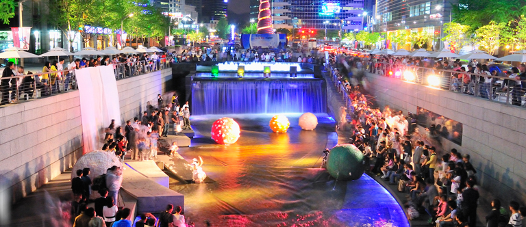
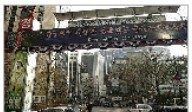
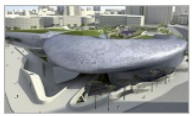
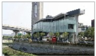

수업1
|
수업2
|
수업3
|
수업4

방문 안내
1. 기본 소개
서울특별시 종로구와 중구 사이를 가로지르는 하천
북악산과 인왕산 부근에서 발원하여 중랑천으로 흘러듭니다.
2. 교통안내
* 서울 신문사(02137, 02706) 하차
간선 : 101,150,501,506,708
지선 : 1711,7016
순환 : 01A
* 지하철
지하철 5호선 광화문역 5번출구에서 약 60m 이동
지하철 1, 2호선 시청역 4번출구에서 약 300m 이동
3. 볼거리
*을지로방향
  